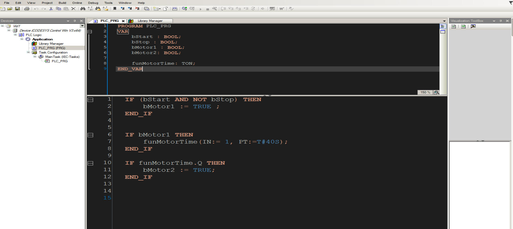

Structured Text Data and Syntax
Sean Terrell
Created: 2019-04-15 Mon 09:26
1 Structured Text in PLC's
1.1 5 Rules for ST
1.1.1 1 Variables
- Vars are declared in the Declation Construct using some Key words
- Varibles must be delared BEFORE they can be used
VAR
bMyBool : BOOL; // Commenting a single line
bMyOtherBool : BOOL := TRUE (* Multi Line
Comment Test*)
iMyDint: DINT; /*Anther type multi line */
fScanTime : REAL;
END_VAR
bMyBool := bMyOtherBool ;
- 

1.1.2 2 SeimiColons devide all statements
- semi colons is how you count state to state
- ST is based on PASCAL, uses Logical Language
- statements move from ; to ; OR Key to ;
1.1.3 3 Whitespace has no meaning
- SHould be used for clarity
~ bMyBool := (bMyOtherBool AND iMyDint > 3), AND NOT fScanTime < 12 ; ~
1.1.4 4 Statements give instructions, using expressions
1.2 TODO (FIXME) Colon is the assignment Operator
1.3 Basic Functions:
TON RTRIG
1.4 Simple IF > Expression
IF